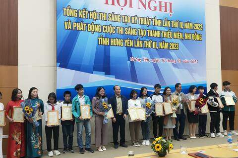
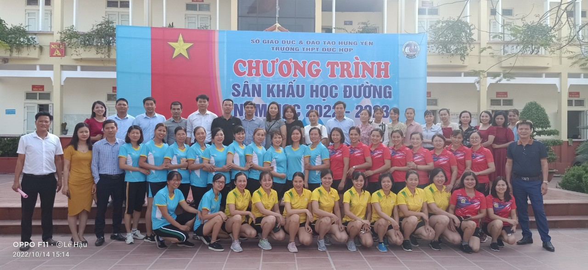
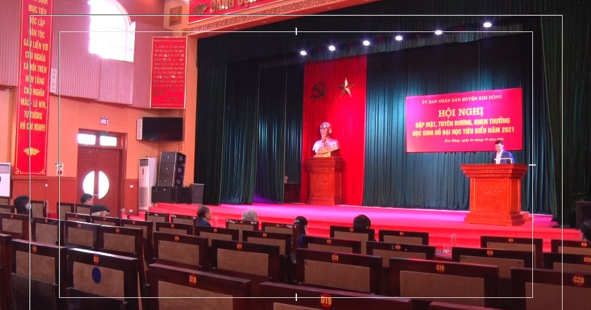

16 GƯƠNG MẶT ƯU TÚ CỦA TRƯỜNG THPT NGHĨA DÂN DỰ HỘI NGHỊ TUYÊN DƯƠNG, KHEN THƯỞNG HỌC SINH ĐỖ ĐẠI HỌC TIÊU BIỂU NĂM 2021
Trong kỳ thi tốt nghiệp THPT năm 2021, trường THPT Nghĩa Dân có 203/225 học sinh đăng ký xét tuyển vào các trường đại học. Số lượng học sinh đỗ đại học (Thống kê lần 1) là 146/203 em (bao gồm cả xét học bạ), đạt tỷ lệ 71,9%.
THÔNG TIN VỀ KỲ THI TUYỂN SINH VÀO LỚP 10 THPT NĂM HỌC 2022-2023 TỈNH HƯNG YÊN
1. Kế hoạch của UBND tỉnh Hưng Yên về kỳ thi tuyển sinh vào lớp 10 THPT năm học 2022-20232. Hướng dẫn của Sở GD&ĐT Hưng Yên về kỳ thi tuyển sinh vào lớp 10 THPT năm học 2022-2023
HỘI THI GIÁO VIÊN DẠY GIỎI TRƯỜNG THPT NGHĨA DÂN NĂM HỌC 2019 - 2020
Ngày 15 tháng 11 năm 2019, Hội đồng giáo dục nhà trường đã tổ chức tổng kết, trao thưởng và giấy chứng nhận Giáo viên dạy giỏi cấp trường cho 8 đồng chí giáo viên.
|  |
TRƯỜNG THPT NGHĨA DÂN TẶNG QUÀ CHO NHỮNG HỌC SINH CÓ HOÀN CẢNH KHÓ KHĂN NHÂN DỊP TẾT NGUYÊN ĐÁN QUÝ MÃO 2023 Tết Nguyên đán Quý Mão 2023 đang đến gần. Đây cũng là lúc cấp ủy, chính quyền các cấp, cơ quan, đoàn thể, tổ chức, cá nhân, doanh nghiệp triển khai những hoạt động, việc làm thiết thực chia sẻ, giúp đỡ người nghèo khó, gia đình chính sách cả về vật chất và tinh thần.Đã thành thông lệ nhiều năm nay, vào dịp Tết Nguyên đán cổ truyền của dân tộc nhằm giúp học sinh hiểu rõ hơn về truyền thống văn hoá, trường THPT Nghĩa Dân lại tích cực vận động các nhà tài trợ, thêm sự đóng góp của cán bộn nhà nước, giáo viên, nhân viên và học sinh nhà trường tặng những suất quà cho các bạn học sinh thuộc diện hộ nghèo, cận nghèo, học sinh có hoàn cảnh đặc biệt khó khăn... |
|  |
CÔNG ĐOÀN TRƯỜNG THPT NGHĨA DÂN VỚI CÁC HOẠT ĐỘNG KỶ NIỆM 92 NĂM NGÀY THÀNH LẬP HỘI LHPN VIỆT NAM 20/10 (20/10/1930 - 20/10/2022) Ngày 14/10/2022, đã diễn buổi giao lưu bóng chuyền hơi nữ giữa các trường THPT huyện Kim Động. Với tinh thần “TRUNG THỰC - CAO THƯỢNG - TIẾN BỘ”, khỏe để lao động, học tập theo gương Bác Hồ vĩ đại, các vận động viên đội bóng chuyền của ba trường đã thi đấu hết sức mình, cống hiến cho khán giả nhiều pha bóng hay, hấp dẫn, làm phong phú thêm đời sống văn hoá tinh thần, nâng cao sức khỏe của cán bộ, công chức, người lao động để thực hiện và hoàn thành xuất sắc mọi nhiệm vụ được giao. Thông qua hoạt động thi đấu thể thao đã góp phần thắt chặt tình đoàn kết, thắm tình anh em giữa các trường THPT trong huyện Kim Động. |
|
“Xuân gắn kết - Tết yêu thương”, chương trình ngoại khoá ý nghĩa chào xuân Quý Mão của trường THPT Nghĩa Dân Mùa xuân - mùa của trăm hoa đua nở, mùa lộc biếc chồi xanh, mùa của yêu thương chan chứa, và trong cái rộn ràng náo nức ấy của hương xuân, được sự cho phép của Ban giám hiệu nhà trường, Đoàn trường THPT Nghĩa Dân đã tổ chức một buổi ngoại khóa đầy ý nghĩa với chủ đề Xuân gắn kết - Tết yêu thương. Buổi ngoại khoá được tổ chức từ ngày 12/01/2023 đến ngày 13/01/2023 với nhiều hoạt động thú vị và đầy ý nghĩa. Tham gia vào buổi ngoại khóa không chỉ có toàn thể cán bộ, giáo viên, nhân viên, các em học sinh mà còn có sự hiện diện của các bậc phụ huynh, các tổ chức và cá nhân bạn bè với tấm lòng trân quý đã đến ủng hộ các hoạt động của nhà trường. |
|
|  |
16 GƯƠNG MẶT ƯU TÚ CỦA TRƯỜNG THPT NGHĨA DÂN DỰ HỘI NGHỊ TUYÊN DƯƠNG, KHEN THƯỞNG HỌC SINH ĐỖ ĐẠI HỌC TIÊU BIỂU NĂM 2021 Ngày 24/10/2021, tại hội trường nhà văn hóa của huyện, UBND huyện Kim Động đã tổ chức gặp mặt riêng, tuyên dương,động viên các em học sinh cũng như khen thưởng học sinh đỗ đại học tiêu biểu năm 2021. Về dự hội nghị có đại diện lãnh đạo Hội Khuyến học tỉnh; Thường trực Huyện ủy, HĐND, UBND huyện, các ban, ngành liên quan và các em học sinh đỗ đại học tiêu biểu năm 2021. Trong kỳ thi tốt nghiệp THPT năm 2021, trường THPT Nghĩa Dân có 203/225 học sinh đăng ký xét tuyển vào các trường đại học. Số lượng học sinh đỗ đại học (Thống kê lần 1) là 146/203 em (bao gồm cả xét học bạ), đạt tỷ lệ 71,9%. |